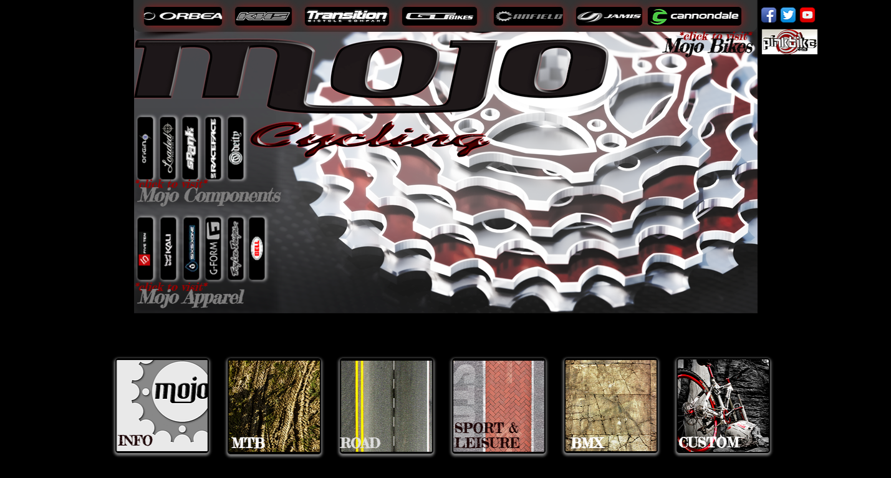
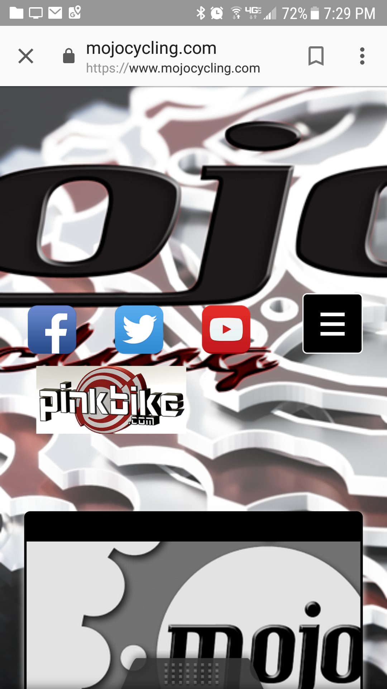
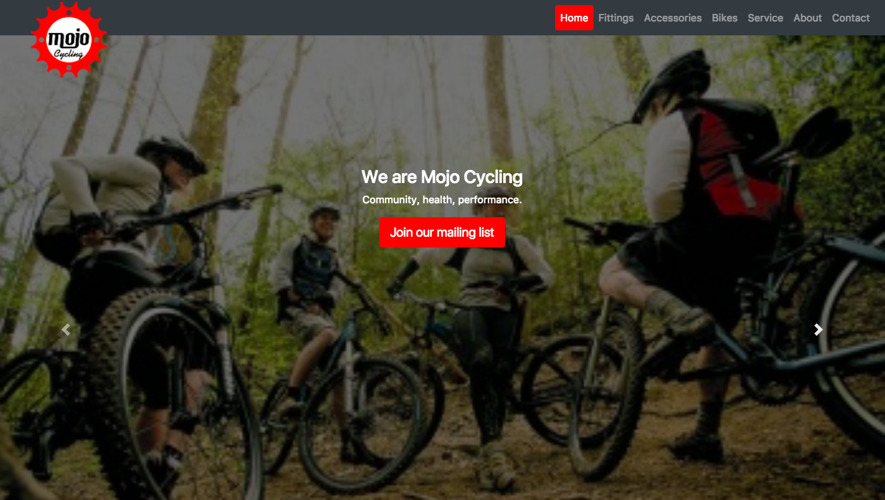
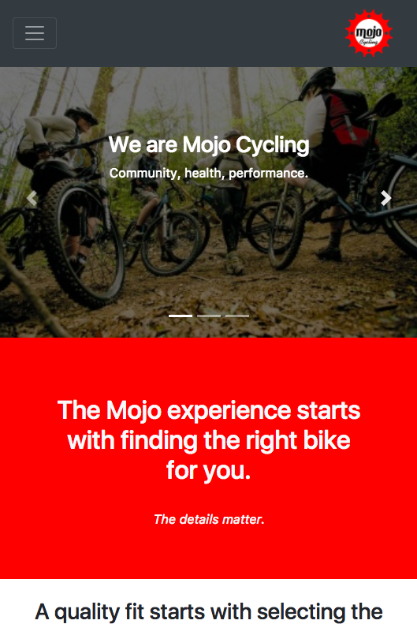
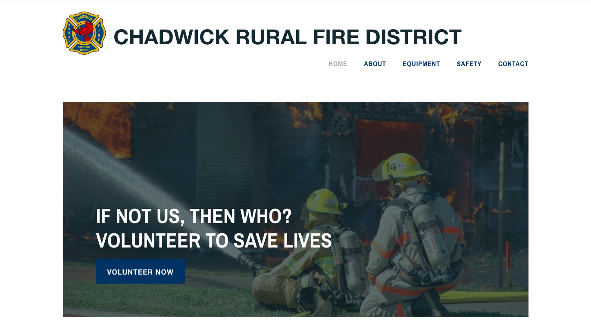
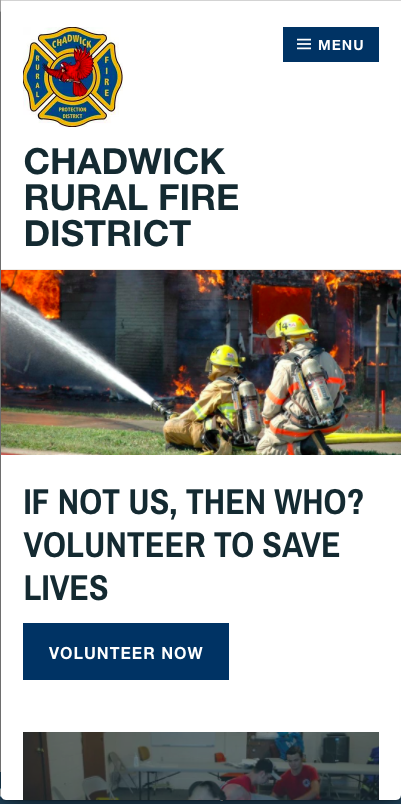

Mojo Cycling is a bike shop in Bentonville Arkansas wishing to attract more customers through a stronger online presense.
Old website desktop view:

Fixed width website may cause content to not be on screen, dark colors make text hard to read, unclear message and purpose, confusing navigation.
Old website mobile view:

Content falling off screen and jumbled creating a difficult mobile experience.
The lowdown:
Trail development in NWA means more out of town riders using mobile devices to find local services. The solution is to create a mobile friendly website using Bootstrap 4 with modified SASS, custom CSS and JS. Built with UI and UX best practices
in mind to allow users of all devices to find information they are seeking while defining the Mojo experience through branding and message.
Well hello Mojo Cycling!

Strong branding and easy to read message with calls to action on a scrolling front page help users experience what makes Mojo Cycling awesome!
New website mobile view:

Optimized mobile experience with clear navigation makes critical information easy to access.
Project 2: Chadwick Fire Department
Create a website to help recrute volunteers and publish safety information.
A Wordpress built website fits the budjet for this project and makes new information easy to publish for Chadwick Fire Department.
Destop view:

Mobile view:
